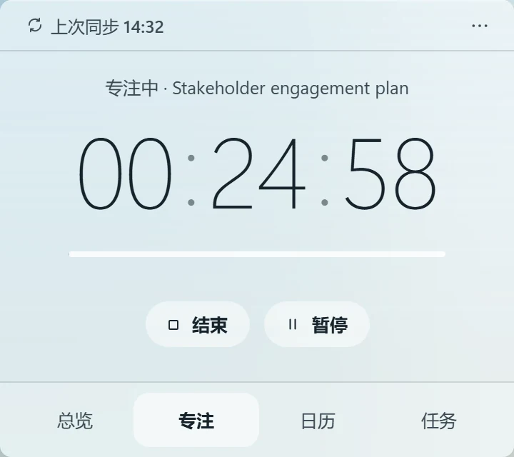
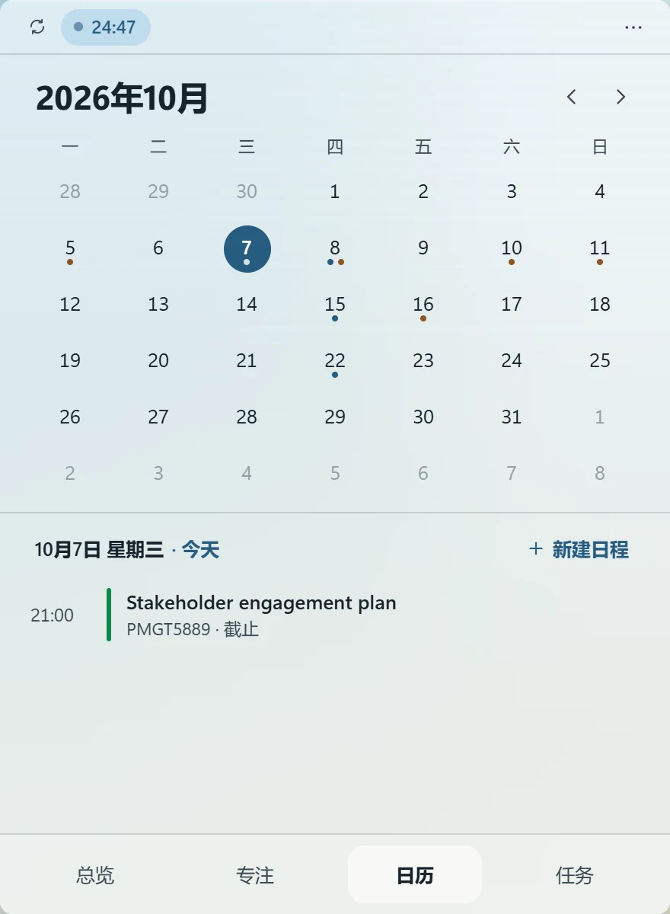
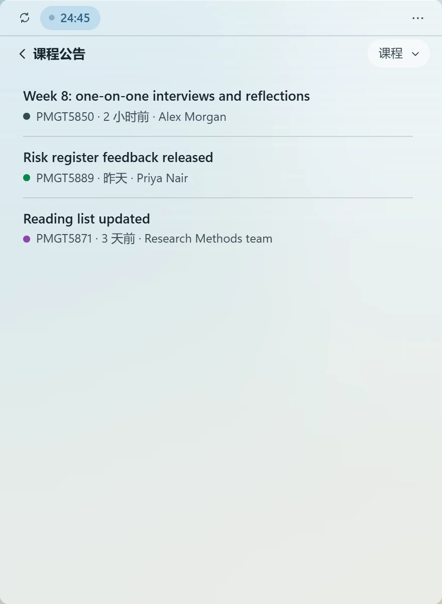
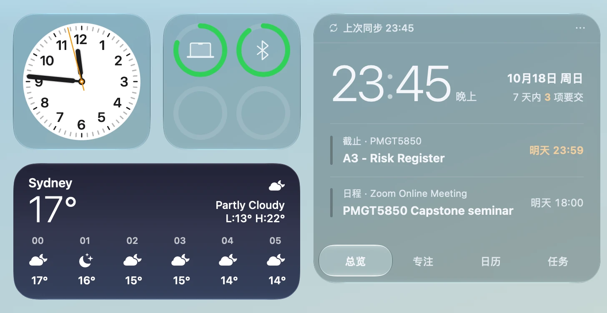
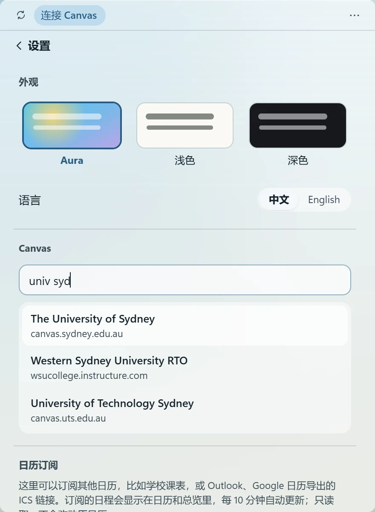
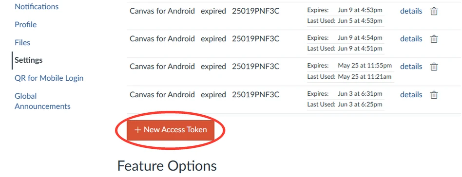
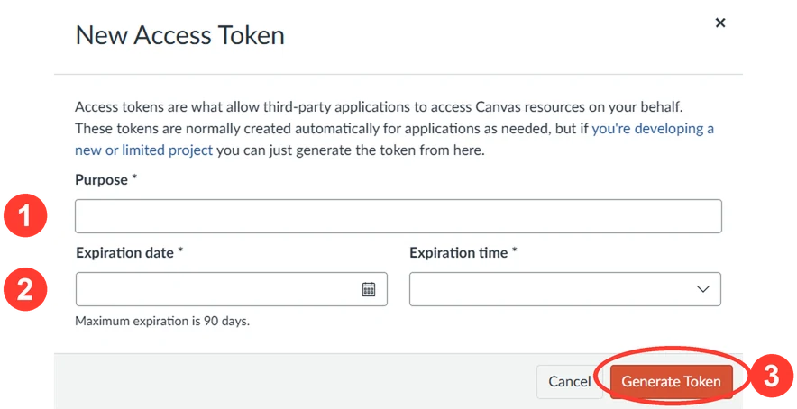
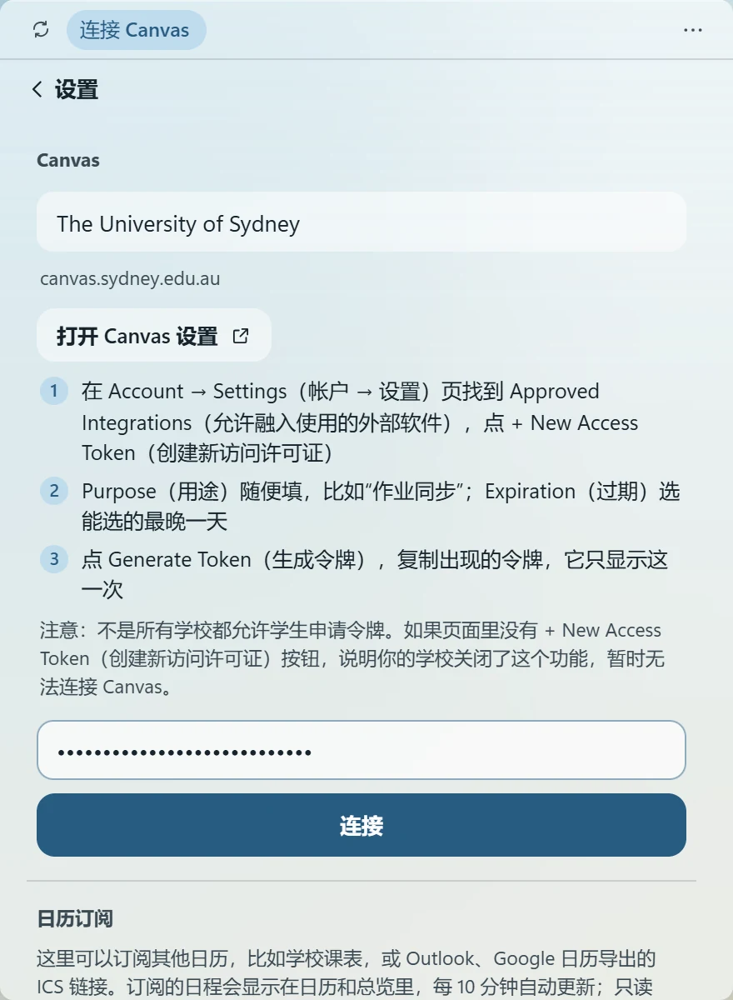

CANVAS 桌面小组件 · 给留学生
只是想看一眼作业，却每次都要打开浏览器、登录、等手机验证？Still Today 把 Canvas 上的作业、截止时间、课表和公告放到 Windows 和 Mac 桌面上。
免费 · 开源 · Windows 和 Mac 都能用
Still Today 是电脑软件，Windows 和 Mac 都能用。把网址发到电脑上（比如微信的「文件传输助手」），在电脑上下载安装。
作业、截止时间、课程日程和公告都在桌面上，看一眼就够，不用再等手机验证。
每 10 分钟和 Canvas 同步一次。交了作业自动打勾，出分和新公告会发系统通知。
用你自己的 Canvas 访问令牌读取。没有账号，中间也没有任何服务器。
功能
任务
作业和测验按已逾期、今天、明天、本周分组。可以按课程筛选、搜索，也能加自己的任务。
交了作业，下次同步自动打勾；老师改了截止时间，这里也跟着改；出分时成绩直接显示在任务上。

专注
计时器可以绑定到某项作业，专注的时长累计在这项作业上。正在专注时，顶栏会一直显示剩余时间。

日历
月视图里有作业截止时间和 Canvas 课程日程，也可以加自己的日程。
还能订阅学校课表、Outlook 和 Google 日历，设置里写明了各自的订阅链接在哪找。

公告与通知
课程公告单独一页，新公告有标记。出分、新公告都会发系统通知。
外观
Aura 主题会模糊小组件背后的壁纸，并跟着壁纸选深色或浅色文字。也有浅色和深色两种主题。
在总览、任务、日历、专注之间切换时，小组件会平滑地变换形状。

Mac 版
玻璃效果照着系统自带的小组件调过，有「通透」和「柔雾」两种。它待在桌面上、其他窗口下面，拖到哪里就停在哪里，也会自动避开系统小组件。
M 芯片和 Intel 芯片的 Mac 都能用，需要 macOS 13 或更新。它在菜单栏里，不占 Dock。
安装
Windows：运行安装包，只为当前用户安装，不需要管理员权限。浏览器提示「不常下载」时，选择 保留。支持 Windows 10（1903 或更高）和 Windows 11。
Mac：打开 .dmg，把 Still Today 拖进「应用程序」。需要 macOS 13 或更新。
Windows：提示「Windows 已保护你的电脑」时，点 更多信息，再点 仍要运行。
Mac：第一次打开被拦下时，到「系统设置 → 隐私与安全性」，往下翻，点 仍要打开。更新后或重启后可能会要你输入钥匙串密码（Mac 的开机密码），这是正常的，输入后点 始终允许。
这是因为安装包还没有代码签名和苹果公证，只有第一次需要这样做。
按下面四步操作，只需要做一次。之后每 10 分钟自动同步。

点右上角 ··· → 设置，输入学校英文名，比如 univ syd。

点 打开 Canvas 设置，往下翻，点 + New Access Token。

用途随便填，到期日选最晚的一天，点 Generate Token 后立即复制。

回到小组件粘贴令牌，点 连接。令牌快到期时会提前提醒你。
如果 Canvas 设置页里没有 + New Access Token，说明你的学校不允许学生创建令牌，暂时无法连接。
常见问题
完全免费。代码在 GitHub 上开源，使用 MIT 许可。
令牌保存在 Windows 的凭据管理器或 Mac 的钥匙串里，不写进文件，只会发给你学校的 Canvas。Still Today 没有账号，中间也没有任何服务器。不想用了，在 Canvas 设置里删掉这个令牌，它会立刻失效。
安装包还没有代码签名，Windows SmartScreen 不认识它。点「更多信息」，再点「仍要运行」即可。代码完全公开，可以在 GitHub 上查看。
Mac 版还没有经过苹果公证。到「系统设置 → 隐私与安全性」，往下翻，点「仍要打开」（macOS 13/14 也可以在应用上右键 → 打开），只需要第一次这样做。更新后第一次打开时，钥匙串可能会询问能否读取 Canvas 令牌，点「始终允许」。
先确认在 Canvas 左侧点头像 → Settings，往下翻到 Approved Integrations。还是没有的话，说明你的学校不允许学生创建令牌，暂时无法连接。
有。M 芯片和 Intel 芯片的 Mac 都能用，需要 macOS 13 或更新。点上面的「下载 Mac 版」，或到 GitHub 的 版本页 下载。
暂时只支持 Canvas。如果你学校的系统能导出日历订阅链接（iCal / ICS），可以在设置的「日历订阅」里添加，截止时间会显示在日历上。
任务、专注记录和设置都保存在你自己的电脑上：Windows 在 %LOCALAPPDATA%\StillToday，Mac 在 ~/Library/Application Support/app.stilltoday.widget。卸载不会删除数据，重新安装后一切照旧。